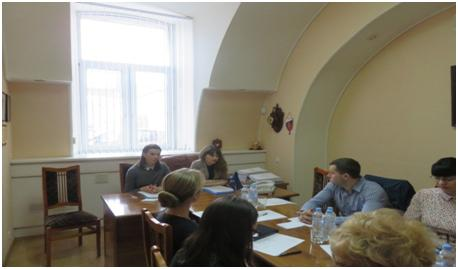
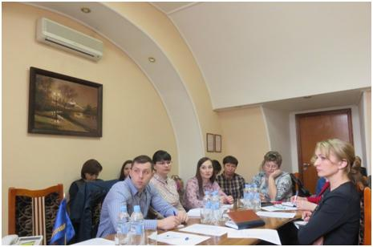

Стартовала серия семинаров с финансовыми организациями, организованная АО МК «Фонд содействия кредитованию малого и среднего предпринимательства Тамбовской области»
28 марта 2017 года на базе АО Банка «Тамбовкредитпромбанк» (далее – Банк-партнёр) представителями акционерного общества Микрокредитная компания «Фонд содействия кредитованию малого и среднего предпринимательства Тамбовской области» (далее – Фонд) был проведён семинар на тему: «Новые условия взаимодействия АО МК «Фонд содействия кредитованию малого и среднего предпринимательства Тамбовской области» с финансовыми организациями».
В семинаре приняли участие сотрудники дополнительных офисов Банка-партнёра из г. Мичуринска, г. Рассказово, г. Котовска, а также управляющие дополнительных офисов АО Банк «Тамбовкредитпромбанк» в г. Тамбове.
В рамках семинар были рассмотрены новые условия взаимодействия Фонда с Банком-партнёром в рамках программы предоставления поручительств субъектам малого и среднего предпринимательства по кредитным договорам.

